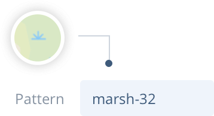
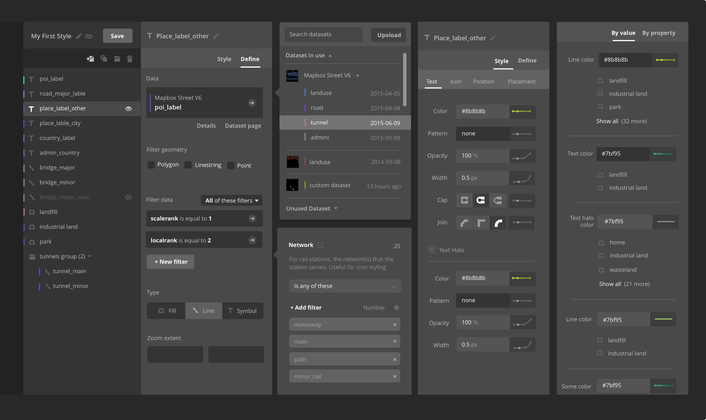
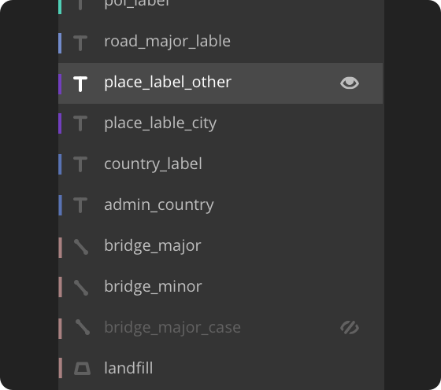
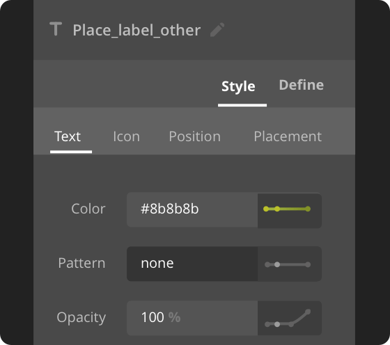
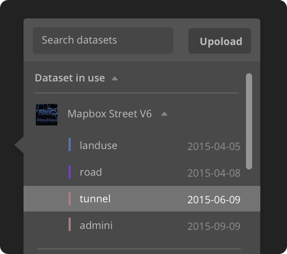
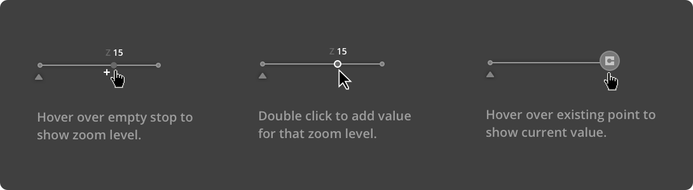
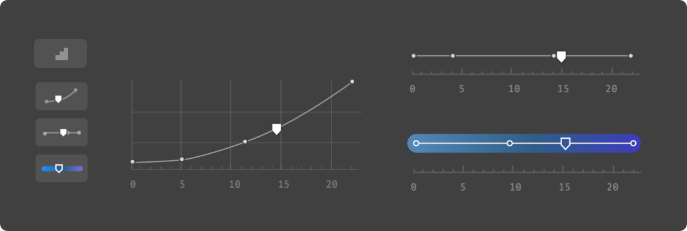
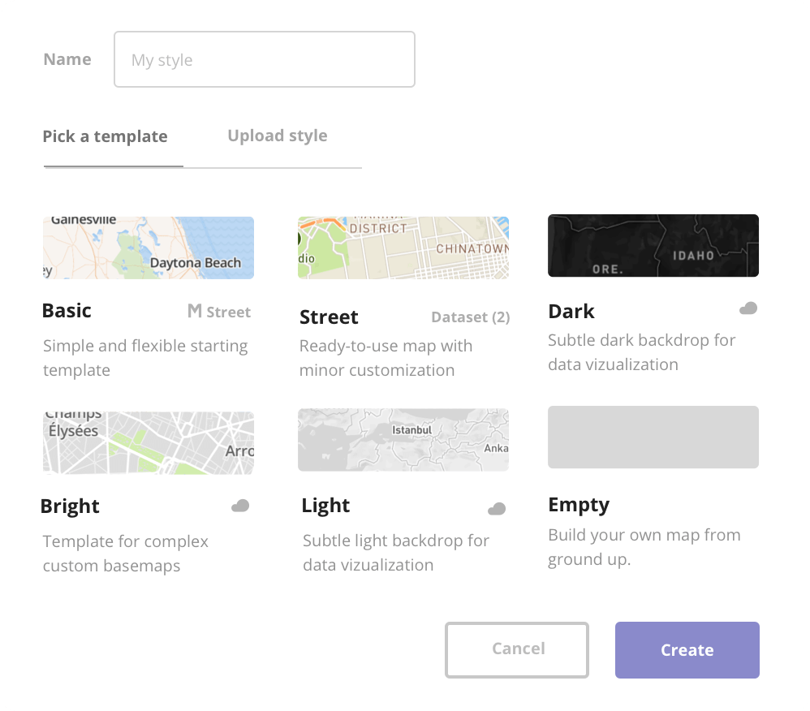

Maya Gao
Case Study
Mapbox Studio
My Role
UI design & dev
Release
November, 2015
Team
Tom MacWright (design & enginnering)
Eden Halperin (design & enginnering)
Saman Bemel-Benrud (design & enginnering)
Scott Andrews (enginnering)
Matthew Whittemore (enginnering)

A Powerful New Mapmaking Tool Fit for Both Pros and Newbies
I started working on Mapbox Studio four months before its public launch. A main focus of the release was the style editor, a professional map design tool. With Studio users can select a map layer, edit data sources of the layer, and then define certain styling properties such as font-size and opacity. As the first visual designer in the team, I was tasked to create a more cohesive, consistent and friendly visual language for the tool.
Style Editor
Before Mapbox Studio style editor, there wasn't really a digital map design tool availalbe that provide complete design control for things like texture, color and fonts. Retaining flexibility that comes with all those poweful customization options, providing visibility for the important features, while at the same time designing a UI that feels approachable and learnable was definitely a big challenge.

Powered by the fast, client-side GL renderer, Studio allows users to directly select and edit map layers and view changes instantly.
Style Editor Iteration August, 2015
Layer list
Data source panel
Data source popover
Layer editing panel
Property panel


Different layer states
Clear, distinguishable states for nested, selected, and hidden layers.

Property categories
Improve clarity by dividing layer properties into four different categories.

Data selection popover
Visual hierarchy between the parent data sources and their subset sources.
Property Function
Property functions provides allows for adjusting values at different zoom stops. There are a few complexities that comes with the property function:
- Functions of number, color and enum properties behave in different ways.
- For number properties, users can also control how fast the value increase/decreases with zoom through changing the exponential base of the interpolation curve.
- There are certain validation rules for functions, for example, zoom stops must always be in ascending order with no duplicates.
To help users better understand how property function works, we introduced detailed ramp graphs, one small graph next to each property entry and another detailed graph inside each function editing popover. We also added automatic sorting and other smart validation rules to prevent people from making mistakes.

Increase the city label size when zooming in.

Function graph
The large detailed graphs helps users understand how functions work and how value change at various zoom levels. I ended up simplifying the small graphs a lot more to make them look less clickable.

Editable graph
Design proposal for an editable graph. Deciding whether to build something is always hard. Prototyping helped us discover some accuracy intricacies with this interaction. So we didn't move forward with it.

Position indicator and distinct styles
I added a diamond pointer to indicate values at current zoom level. The distinct styles of small graphs help users differentiate between color, enum and number functions at a glance.
Dashboard
In addition to map design, Studio also serves as an online platform that connects all the Mapbox products, from the data upload and processing pipeline to the developer APIs and SDKs. Users can design maps, upload and manage custom data, analyze API usage and manage account, all in one place.

Home page
The goal of the home page is to help user navigate and find what they are looking for. We identified three most common tasks: design, develop and data visualization and made them easy accessible from the main view.

Listing pages
The listing pages consist of a left main view with all styles/tilesets in a user's account, and a right sidebar explaining how to use those resources. There is also a data upload popover showing the status of current upload.
Modal
Modal is another main UI component. The challenge here is explaining abstract concepts and displaying large amount of information in a very confined space.

New style modal
There are six styles users can choose as a base template for their design. The goal of this modal is to help them make an informed decision on which style to pick based on different needs.

Layer composite modal
Composite means combining various data sources for use cases like label collision detection. Here I tried to use illustration to explain a abstract concept.
What I learned
Coming to the team at a later stage definitely makes the job more daunting since I have less context about the product history. Luckily, the team at Mapbox values deeply about open communication and they documented everything, down to every small UI tweaks, on Github. A big part of what I do at the beginning was just reading through the ticket to better understand how certain decisions are made.
This experience helped me understand the importance of documentation and communication. I tried my best later on to apply the same principles to other projects I worked on: 1) Demonstrate clearly with mockups what I am trying to achieve, 2) Gather constant feedbacks from engineers to build consensus, and 3) Document the reason behind every design decision with clarity.
Sometimes better communication also means going the extra mile to make a prototype or open a pull request. Using the same tool to design and develop and communicate really helps build empathy between designers and engineers. In a small team and a highly iterative environment, opening a pull request also brings more credibility to the design decisions than ../static images. It allows me to establish trust and introduce systematic changes merely a few months before the launch.

Some illustrations I did for the Studio sign up page.
Maya Gao is a product designer and developer working for Mapbox in Washington D.C. Previously she was a designer at Lonely Planet and Upstatement.
Back